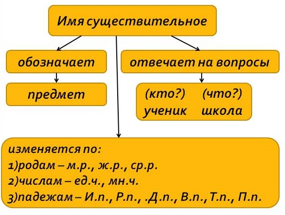

Грамматика
Презентация - Имя существительное
Имя существительное обладает рядом атрибутов (именных классов), число которых в разных языках различно. Такими атрибутами могут являться:
- род (мужской род, женский род, средний род, также бывают существительные общего и обоюдного родов);
- падеж (именительный, родительный, дательный, винительный, творительный, предложный);
- число (единственное, множественное);
- одушевлённость.
Склонение имен существительных
| Склонение имен существительных | ||
|---|---|---|
| Тип склонения | Примеры | |
| 1-е склонение | м.р. -а, -я ж.р. -а, -я |
папа, дядя армия, школа |
| 2-е склонение | м.р. - cр.р. -о, -е |
класс, дом окно, поле |
| 3-е склонение | ж.р. -ь | ночь, мышь |